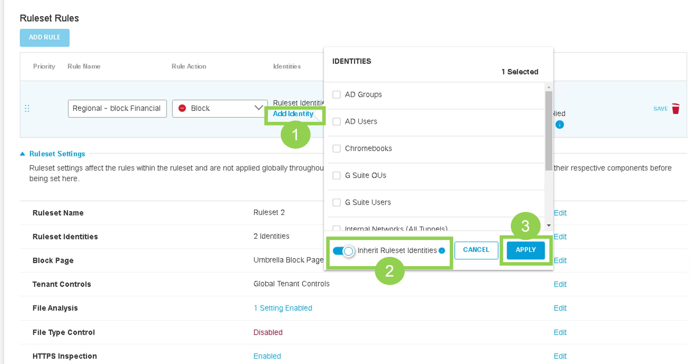
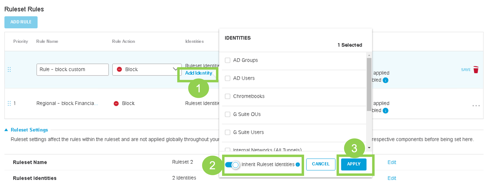
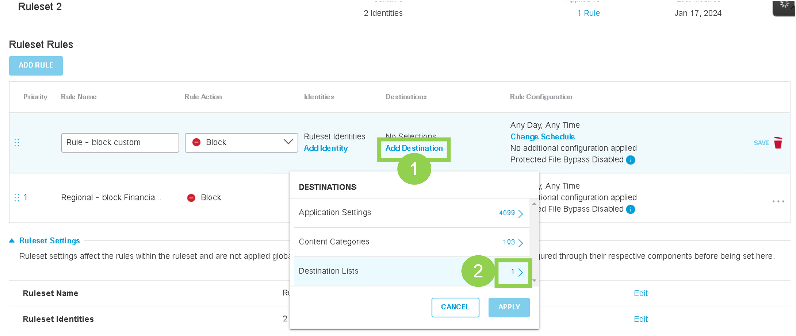
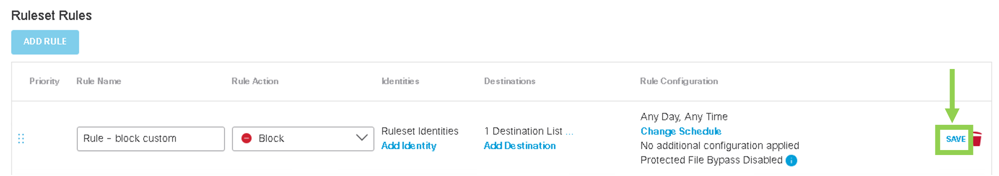
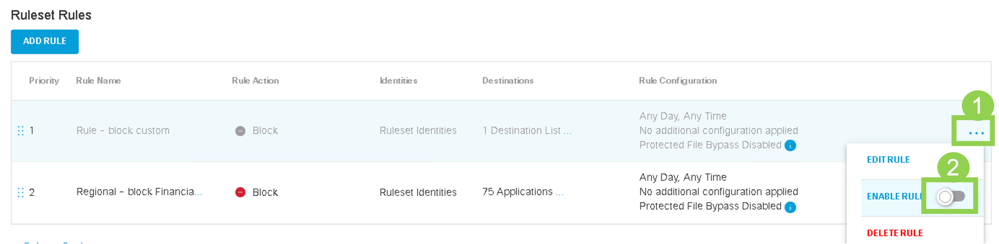
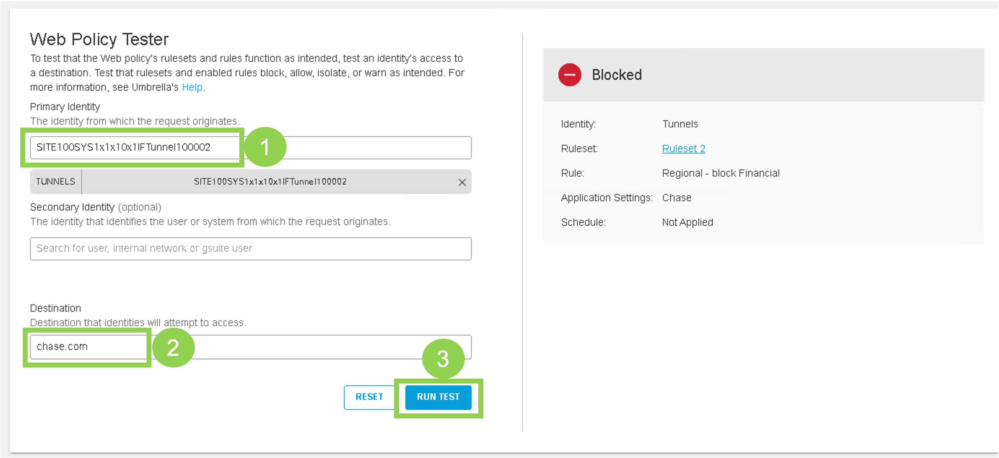

Task 8 - Umbrella Regional Policies
This tasks will walk through the steps to create Web Proxy Policies that will be enforced on Site-100 and Site-400 (i.e., regional sites). These policies will:
* Block web traffic to Financial Institutions
* Block web traffic to additional websites by creating custom destination list
Step 1 - Umbrella Web Policy
In this step we will configure Umbrella Web Policy to block traffic to Financial websites from Regional sites:
-
On the RDP session (jumphost), logon to Umbrella Dashboard by clicking on Google Chrome Browser bookmark named
Umbrella SSO. It will open the Umbrella dashboard and auto-login using single-sign-on. -
Go to Policies > Management > Web Policy and click Add on the top right to add a new Ruleset as shown in below screenshot:

- On the new "Ruleset Rules" web page, under Ruleset Settings scroll down to Ruleset identities and Click Edit as shown below:

- Next on the Ruleset Identities web page, under
All Identitiesscroll down to Tunnels and Click on number 4 with right arrow i.e.,4 >as shown below:
- On the next page, select the two Tunnels for SITE100 and Click SAVE button as shown below:
| Note: |
|---|
| You must only select SITE100 tunnels. Do not select SITE300 tunnels in this step. |
- Under the Ruleset Settings, scroll down to HTTPS Inspection section and click Edit:

- Select Enable HTTPS Inspection, then click Save:

- After adding the identities, Click ADD RULE button. Give the Rule Name of
Regional - block Financialand verify theRule ActionisBlock:

- Next click on Add Identity for this rule. Enable Inherit Ruleset Identities and click Apply as shown in below figure:

- Further on the new rule, click on Add Destination and Click on right arrow
>next to Application Settings:

- Then scroll down to Select Financial Services and hit Apply:

- On the Rule click on Save icon to save newly added rule as shown in below screenshot:

- By default newly created rules are disabled. To enable the Rule 1, click three dots (
...) at the right side and then toggle Enable Rule as shown in below screenshot.

- Confirm by clicking Update:

Now the rule and ruleset settings are all configured for Regional sites.
- Scroll down and click Close as shown in below screenshot

Step 2 - Create Customs-list Web Policy
In the previous step, a web policy as per Umbrella classification of Financial services websites has been created. Now let's create our own website list (using Umbrella Destination List) and then use Web policy to block web traffic to this list i.e., custom URL. This will be done by adding a new rule under existing Ruleset for regional sites i.e., Ruleset 2.
- On Umbrella dashboard, navigate to Policy > Policy Component > Destination lists, click Add on the top right corner:

-
Add this list as per below settings:
- List Name:
Custom-Filter - Destination List type:
Web Proxy(from drop-down menu) - Destination:
www.cnn.com -
Click
Add -
Click Save after adding destination/domain:

- List Name:
-
Navigate to Policies > Management > Web Policy and expand on RuleSet 2 by clicking on it or by clicking down-arrow:

-
Let's add a new rule by clicking ADD RULE button. Give the Rule Name of
Regional - block customand verify theRule ActionisBlock:
-
Next let's also use ruleset identities for this rule. Click on Add Identity for this rule and enable Inherit Ruleset Identities and click Apply as shown in below figure:

- Further on the new rule, click on Add Destination and CLick on the right arrow
>next to Destiniation Lists

- Select the Custom-Filter and then click on Apply

-
Click on Save on this newly created rule: 
-
By default newly created rules are disabled. To enable the Rule 2, click three dots (
...) at the right side and then toggle Enable Rule as shown in below screenshot.

- Confirm by clicking Update:
- After saving the rule, You may scroll down under Ruleset settings and click on Close button.
Now the Umbrella policies for regional sites (site-100 and Site-400) have been configured.
Step 3 - Web Policy Tester
Let's go through the steps to test the newly created Web policies by using "Policy Tester" on Umbrella.
-
On Umbrella Dashboard, navigate to Policies > Management > Web Policy. Click on Policy Tester at the top right corner:

-
On the
Web Policy Testerpage,- Under the Primary Identity search box type
Site1and then select any of the Site100 tunnels - Under Destination, enter
chase.com - Then click Run Test button: 
- Under the Primary Identity search box type
The result of this test appears on the page and as expected it shows the Ruleset 2 and rule being matched by the Web policy.
- Next run a test for any of the Site100 tunnel for below destinations:
- Under Destination, enter
www.cnn.com
- Under Destination, enter
The result of this test appears on the page and as expected it shows the Ruleset 2 and rule being matched by the Web policy.
- Explore the Web Policy Tester further by testing traffic to different destination website such as cisco.com, google.com etc for Regional sites traffic.
Step 4 - Verify Policies on Hosts
Now lets validate the impact of both Firewall and Web Policies from the SD-WAN Site-400 (Regional site).
-
First validate if traffic is being redirected to Umbrella.
- Launch console access to ubuntu Site400-VPN10 host by using mRemoteNG application. Login with credentials of
viptela - Use Chromium Browser to navigate to
welcome.umbrella.com. A green check mark should appear, confirming that traffic from VPN 10 is being successfully redirected to Umbrella.
- Launch console access to ubuntu Site400-VPN10 host by using mRemoteNG application. Login with credentials of
-
Verify Web Policy by using Chromium Web Browser on Site400-VPN10 host. Just like previous step, use the console of ubuntu Site400 VPN10 host by using mRemoteNG application.
- Use Chromium to navigate onto traditional websites, such as
www.cisco.com. Access to this website should work. - Use Chromium to navigate to
www.cnn.com. As per our Umbrella Web Policy, this site should be blocked and, as expected, Cisco Umbrella block page will appear. - Use Chromium to navigate to
www.chase.com. As per our Umbrella Web Policy, this sites should be blocked and, as expected, Cisco Umbrella block page will appear. - Use Chromium to navigate to
www.bankofamerica.com. As per our Umbrella Web Policy, this sites should be blocked and, as expected, Cisco Umbrella block page will appear. - Use Chromium to navigate onto
www.facebook.com. Access to this site should work as expected
- Use Chromium to navigate onto traditional websites, such as